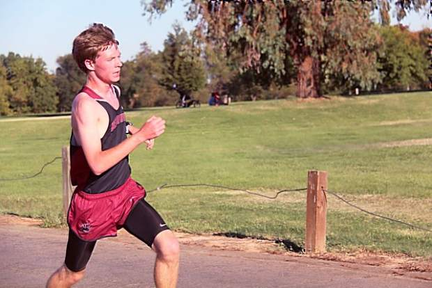

Running
Here you can see my athletic achievements and history
College
See the races I ran on Athletic.net

Career Bests
8K: 27:31.1
High School
See the races I ran on Athletic.net or MileSplit.com
Awards and Acomplishments
Scholar Athlete Award; November 2009-2012 (Cross Country), May 2010-2013 (Track and Field)
Athlete of the Month Bear River High School; November 2011
Most Valuable Athlete Award Bear River High School; November 2011-2012 (Cross Country), May 2012-2013 (Track and Field)
All-League Honors Pioneer Valley League; November 2011-2012 (Cross Country), May 2012-2013 (Track and Field)
Career Bests
800m: 2:06.08
1500m: 4:15.61
1600m: 4:28.62
3000m: 9:46.24
3200m: 9:57.86
3 Mile: 16:49
5k: 16:58.8